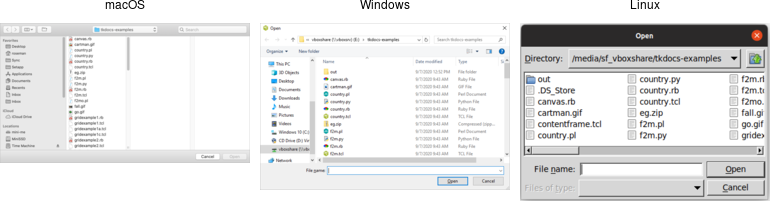
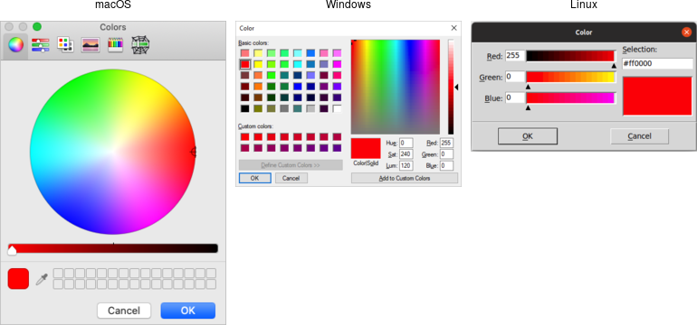
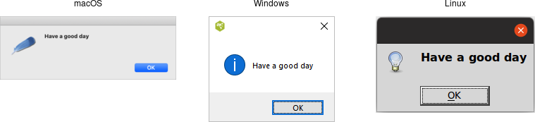

Dialog Windows
Dialog boxes are a type of window used in applications to get some information from users, inform them that some event has occurred, confirm an action, and more. The appearance and usage of dialog boxes are usually quite specifically detailed in a platform's style guide. Tk comes with several dialog boxes built-in for common tasks. These help you conform to platform-specific style guidelines.
Selecting Files and Directories
Tk provides several dialogs to let users select files or directories. On Windows
and macOS, these invoke the underlying operating system dialogs directly. The
"open" variant on the dialog is used when you want users to select an existing
file (like in a "File | Open..." menu command), while the "save" variant is
used to choose a file to save into (usually used by the "File | Save As..."
menu command).
#![allow(unused)] fn main() { let filename = tk.get_open_file()?; let filename = tk.get_save_file()?; let dirname = tk.choose_directory()?; }
All of these commands produce modal dialogs. This means that the commands will not complete until a user submits the dialog. These commands return the full pathname of the file or directory a user has chosen, or an empty string if a user cancels out of the dialog.
| Open file dialogs |
|---|
|  |
| Save file dialogs |
|---|
 |
| Choose directory dialogs |
|---|
 |
Various options can be passed to these dialogs, allowing you to set the
allowable file types, initial directory, default filename, and many more. These
are detailed in the getOpenFile (includes getSaveFile) and chooseDirectory
reference manual pages.
Selecting Colors
Another modal dialog lets users select a color. It will return a color value,
e.g. #ff62b8. The dialog takes an optional initialcolor option to specify an
existing color, i.e., that users might want to replace. More information is
available in the chooseColor reference manual pages.
#![allow(unused)] fn main() { tk.choose_color( -initialcolor("#ff0000") )?; }
| Choose color dialogs |
|---|
|  |
Selecting Fonts
Tk 8.6 added support for another system dialog: a font chooser. While the file dialogs and color chooser were modal dialogs, that block until the dialog is dismissed and then return a result, the font chooser doesn't work like that.
| Font chooser dialogs |
|---|
 |
While the system font dialog is modal on some platforms, e.g., Windows, that's not the case everywhere. On macOS, the system font chooser works more like a floating tool palette in a drawing program, remaining available to change the font for whatever text is selected in your main application window. The Tk font dialog API has to accommodate both models. To do so, it uses callbacks (and virtual events) to notify your application of font changes.
To use the font dialog, first provide it with an initial font and a callback which will be invoked when a font is chosen. For illustration, we'll have the callback change the font on a label.
#![allow(unused)] fn main() { let l = root .add_ttk_label( "l" -text("Hello World") -font("helvetica 24") )? .grid( -padx(10) -pady(10) )?; let font_changed = tclosure!( tk, |some_font:Obj| -> TkResult<()> { Ok( l.configure( -font(some_font) )? )}); tk.fontchooser_configure( -font("helvetica 24") -command(font_changed) )?; }
You can query or change the font that is (or will be) displayed in the dialog at any time.
Next, put the dialog onscreen via the show method. On platforms where the font
dialog is modal, your program will block at this point until the dialog is
dismissed. On other platforms, show returns immediately; the dialog remains
onscreen while your program continues. At this point, a font has not been
chosen. There's also a hide method to remove it from the screen (not terribly
useful when the font dialog is modal).
#![allow(unused)] fn main() { tk.fontchooser_show()?; tk.fontchooser_hide()?; }
If the font dialog was modal, and the user chose a font, the dialog would have
invoked your callback, passing it a font specification. If they cancelled out of
the dialog, there'd be no callback. When the dialog isn't modal, and the user
chooses a font, it will invoke your callback. A
event::virtual_event( "TkFontchooserFontChanged" ) virtual event is also
generated; you can retrieve the current font via the dialog's font
configuration option. If the font dialog is closed, a
event::virtual_event( "TkFontchooserVisibility" ) is generated. You can also
find out if the font dialog is currently visible onscreen via the visible
configuration option (though changing it is an error; use the show and hide
methods instead).
Because of the significant differences between them, providing a good user experience on all platforms takes a bit of work. On platforms where the font dialog is modal,it's likely to be invoked from a button or menu item that says, e.g.,
Font.... On other platforms, the button or menu item should toggle betweenShow FontsandHide Fonts.
If you have several text widgets in your application that can be given different fonts, when one of them gains focus, it should update the font chooser with its current font. This also means that a callback from the font dialog may apply to a different text widget than the one you initially called
showfrom! Finally, be aware that the font chooser itself may gain the keyboard focus on some platforms.
As of Tk 8.6.10, there are a few bugs in the font chooser on various platforms. Here's a quick rundown including workarounds:
- on macOS, if you don't provide a font via the
fontconfiguration option, your callbacks won't be invoked ⇒ always provide an initial font
- on X11, if you don't provide values for all configuration options, those you don't include will be reset to their default values ⇒ whenever you change any option, change all of them, even if it's just to their current value
- on X11, the font dialog includes an
Applybutton when you provide a callback, but omits it when you don't (and just watch for virtual events); however, other bugs mean those virtual events are never generated ⇒ always provide a command callback
- on Windows, you can also leave off the
Applybutton by not providing a callback; while virtual events are generated on font changes, thefontconfiguration option is never updated ⇒ always provide a command callback, and hold onto the font yourself, rather than trying to ask the font dialog for it later
- on Windows, a font change virtual event is not generated if you change the
fontconfiguration option in your code, though it is on macOS and X11 ⇒ take any necessary actions when you change the font in your code rather than in a virtual event handler
Because of the differences between platforms and the various bugs, testing is far more important when using the font chooser than the other system dialogs.
Alert and Confirmation Dialogs
Many applications use various simple modal alerts or dialogs to notify users of an event, ask them to confirm an action, or make another similar choice via clicking on a button. Tk provides a versatile "message box" that encapsulates all these different types of dialogs.
#![allow(unused)] fn main() { tk.message_box( -message("Have a good day") )?; }
| Simple message boxes |
|---|
|  |
#![allow(unused)] fn main() { tk.message_box( -type_( "yesno" ) -message( "Are you sure you want to install SuperVirus?" ) -icon( "question" ) -title( "Install" ) )?; }
| Example message boxes |
|---|
 |
Like the previous dialogs that we've seen, these are modal and return the result
of a user's action to the caller. The exact return value will depend on the
type_ option passed to the command, as shown here:
ok (default): ⇒ ok
okcancel: ⇒ ok or cancel
yesno: ⇒ yes or no
yesnocancel: ⇒ yes, no or cancel
retrycancel: ⇒ retry or cancel
abortretryignore: ⇒ abort, retry or ignore
The full list of possible options is shown here:
type_: As described above.
message: The main message displayed inside the alert.
detail: A secondary message (if needed).
title: Title for the dialog window. Not used on macOS.
icon: Icon, one of info (default), error, question or warning.
default: Default button, e.g. ok or cancel for a okcancel dialog.
parent: Window of your application this dialog is being posted for.
Additional details can be found in the reference manual.
Run Example
cargo run --example dialog_windows